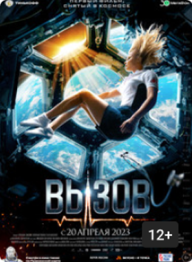

Вызов (12+)
Режиссер: Клим Шипенко
Драма, Россия, 2023
Kinopoisk - 7.5
Торакальный хирург Женя за месяц должна подготовиться к космическому полету, чтобы отправиться на МКС и спасти заболевшего космонавта. Ей придётся преодолеть неуверенность и страхи, а также провести сложнейшую операцию в условиях невесомости, от которой зависят шансы космонавта вернуться на Землю живым.